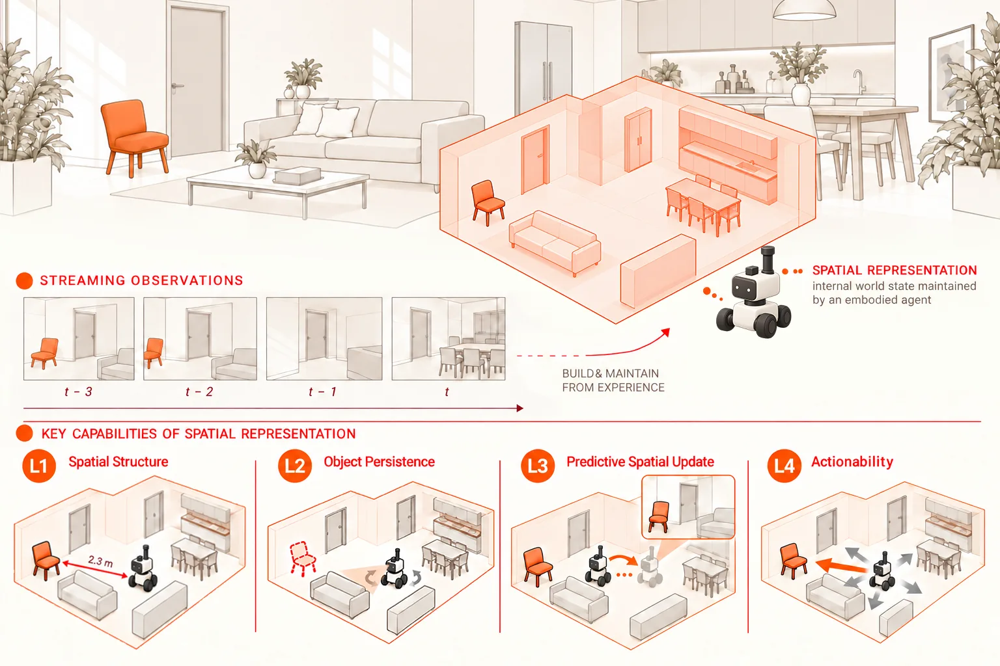
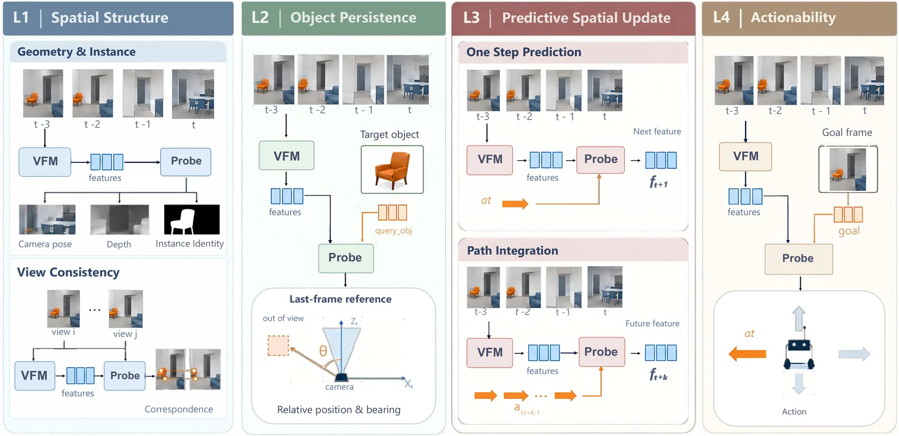
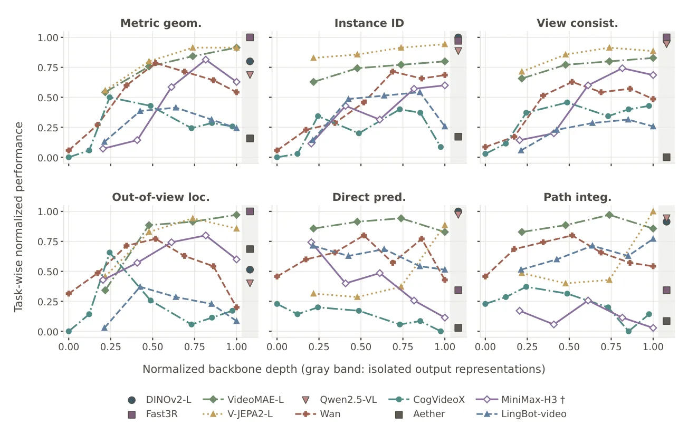

O problema da representação espacial em modelos visuais
Um observador vê apenas uma parte do mundo ao seu redor, mas precisa manter o rastro do que está além da visão atual. A percepção espacial, portanto, envolve mais do que reconhecer imagens individuais: exige um estado espacial persistente que seja atualizado sob movimento próprio (ego-motion) e usado para guiar ações. Essa é a base da cognição biológica, onde humanos e animais não experimentam o mundo como uma sequência de imagens retinianas independentes, mas mantêm informações sobre o espaço circundante, rastreiam objetos que saíram do campo de visão e atualizam sua própria localização.
Modelos visuais de fundação (Visual Foundation Models - VFMs) têm demonstrado capacidades impressionantes em reconhecimento de objetos e segmentação. No entanto, surge uma pergunta fundamental: esses modelos fornecem representações que suportam um estado espacial funcional? Ou seja, eles codificam informações que persistem além da observação imediata, são atualizadas preditivamente e podem ser usadas para ações direcionadas a objetivos? Este paper, intitulado "Probing Spatial State Representations in Visual Foundation Models", investiga exatamente essa lacuna.
Os autores, de instituições como New York University, Nanyang Technological University e outras, propõem uma avaliação baseada em quatro níveis de capacidade espacial. Em vez de assumir que os modelos internalizam mapas 3D explícitos ou grafos de cena, eles caracterizam a utilidade funcional da representação através de tarefas específicas. O objetivo não é vender o paper como uma revolução, mas sim expor honestamente o que esses modelos sabem e, mais importante, o que eles não sabem sobre o espaço físico que observam.

Definindo os quatro níveis de capacidade espacial
Para medir se um modelo possui um "estado espacial", os autores definem quatro níveis de capacidade, ordenados pela complexidade do que cada um exige além da observação atual. O primeiro nível, L1, é a Estrutura Espacial. Ele avalia a capacidade de recuperar a organização espacial da cena observada através de geometria métrica (como profundidade e pose da câmera), identidade de instância (reconhecer o mesmo objeto em diferentes vistas) e consistência de vista. Este nível é fundamentalmente sobre ler a cena visível no momento presente.
O segundo nível, L2, é a Persistência de Objetos. Aqui, o teste exige que o modelo retenha a localização relativa de um objeto previamente observado após ele ter saído do campo de visão. Isso vai além da leitura da cena atual; requer que o modelo mantenha informações de visões anteriores e as relacione com a nova posição da câmera. É um teste direto de memória espacial e rastreamento de objetos ocultos.
O terceiro nível, L3, é a Atualização Espacial Preditiva. Este nível exige que o modelo antecipe as mudanças no estado relativo ao observador sob movimento próprio. Os autores avaliam isso através de duas abordagens: previsão direta (prever o que será visto após uma ação) e integração de caminho (path integration, estimar a nova posição baseada no movimento). Isso testa se a representação evolui de forma preditiva e não apenas reativa.
O quarto e último nível, L4, é a Acionabilidade (Actionability). Este nível exige o uso do estado representado e de um objetivo específico para prever uma ação que faça progresso em direção a esse objetivo. É o nível mais alto, pois relaciona a representação espacial com a tomada de decisão e a interação com o ambiente. Os autores enfatizam que esses níveis são ordenados pelo que cada um demanda além da observação atual: L1 lê a cena visível; L2 requer retenção de visões anteriores; L3 requer antecipação; e L4 requer relação com objetivos e ações.
Metodologia: Probing com features congeladas
Para avaliar essas capacidades, os autores utilizam uma abordagem de "probing" (sondagem) com features congeladas. Eles selecionam dez representações de diferentes famílias de modelos, incluindo Fast3R, DINOv2, VideoMAE, V-JEPA2, Qwen2.5-VL, Wan, CogVideoX, MiniMax-H3 e Aether. Esses modelos são avaliados em um cenário de streaming egocêntrico, onde o observador recebe evidências visuais passadas e atuais em ambientes internos estáticos, sem acesso a informações futuras.
Os probes são treinados para extrair informações específicas das features dos modelos em diferentes camadas da rede. Para L1, os probes leem a estrutura da cena. Para L2, eles recebem as features do prefixo (histórico visual) e um query de objeto para localizar onde ele estaria. Para L3, os probes avaliam a previsão direta e a integração de caminho. Para L4, os probes tentam prever ações condicionadas a objetivos. Os autores agregam os resultados sobre diferentes prefixos e camadas, sem selecionar a melhor camada ou prefixo artificialmente, para obter uma visão robusta do desempenho.
Um ponto crucial da metodologia é o uso de controles pareados (matched controls). Para separar a acurácia da leitura da confiabilidade no uso da história visual e do movimento, os autores comparam o desempenho dos probes contra baselines que não usam informação temporal ou motora adequada. Isso permite distinguir se um modelo está realmente usando a história espacial ou apenas fazendo chutes baseados na cena atual. Além disso, eles avaliam a transferência de leitores treinados em features reais para features previstas, testando a robustez da representação preditiva.

Resultados: Leitura de cena vs. Persistência e Previsão
Os resultados principais, resumidos na Tabela 2 do paper, revelam perfis de capacidade distintos entre os modelos. Uma descoberta chave é que a precisão na leitura da cena visível não determina a persistência de objetos. Por exemplo, o Fast3R alcança o menor erro de persistência de objetos (32.79 graus), seguido pelo VideoMAE (36.45 graus). No entanto, o VideoMAE localiza muito mais precisamente do que o DINOv2 (65.38 graus) e o Qwen2.5-VL (68.59 graus), embora ambos superem o VideoMAE em profundidade, identidade de instância e consistência de vista.
Isso significa que um modelo pode ser excelente em reconhecer o que está na frente dele, mas falhar em rastrear objetos que saíram de vista. A persistência de objetos revela diferenças que a leitura da cena sozinha não capturaria. Os autores mostram que a persistência está alinhada com a leitura da pose da câmera. As três representações mais precisas na localização de objetos ausentes (Fast3R, VideoMAE, V-JEPA2) são exatamente as três com a maior AUC@30 na leitura de pose da câmera. A correlação de rank entre persistência e leitura de pose é alta (rho = 0.76), enquanto é baixa para profundidade, identidade e consistência (rho <= 0.43).
Isso sugere que localizar um objeto que saiu da vista requer relacionar a câmera atual com pontos de vista anteriores. Uma representação que expõe a pose da câmera fornece o ingrediente necessário para a persistência. Varreduras de camada corroboram isso: nos backbones multi-camadas, o bloco onde a persistência atinge o pico é o mesmo onde a geometria métrica atinge o pico. Portanto, a persistência depende de ingredientes que estão presentes na representação da pose, não apenas na aparência visual.
Resultados: Previsão e a falha da transferência
Na tarefa de previsão espacial (L3), os modelos apresentam ordenações diferentes. O DINOv2 lidera na previsão direta (R@1 0.2373), enquanto o V-JEPA2 lidera na integração de caminho (0.1588). O Qwen2.5-VL fica em segundo lugar na previsão direta, mas sua ordem se inverte na integração de caminho em comparação com o DINOv2. Isso mostra que previsão direta e integração de caminho, embora correlacionadas entre si (rho = 0.93), não estão relacionadas à ordenação de persistência (|rho| < 0.1).
Os autores também investigam se a previsão nativa do modelo preserva a estrutura espacial recuperável. Eles descobrem que a previsão nativa mantém uma estrutura espacial recuperável, mas um leitor de espaço treinado em features reais não se transfere para features previstas sem alterações. Isso indica que a distribuição das features previstas é diferente das features reais, mesmo que a informação subjacente esteja presente. Leitores precisam ser re-treinados ou adaptados para operar sobre previsões.
Além disso, os controles de ação mostram que o ganho do preditor direto sobre controles sem ação ou com ação embaralhada é acima de zero para oito modelos, mas pequeno para CogVideoX, Fast3R e Wan. O MiniMax-H3 excede apenas o controle sem ação, e a previsão direta do Aether não é distinguível do acaso. Isso sugere que, para alguns modelos, a previsão de futuro pode ser apenas uma extrapolação estatística fraca, não uma verdadeira modelagem causal do espaço.

Resultados: Acionabilidade e o problema do objetivo
O nível L4, Acionabilidade, revela limitações significativas. A seleção de candidatos baseada em objetivo não estabelece uma utilidade contínua confiável para a ação. Os autores testam se o modelo pode usar o estado representado e um objetivo especificado para prever uma ação que faça progresso. Embora as ações previstas respondam a mudanças no objetivo, fornecer o objetivo correto não melhora consistentemente o progresso em direção a ele.
Isso é um achado importante: ter uma representação espacial precisa não garante que o modelo saiba como usá-la para agir. A ponte entre representação e ação é frágil. Os autores notam que famílias de representação não determinam o sucesso na acionabilidade, sugerindo que a capacidade de ação pode depender de fatores além da qualidade da feature visual, como a arquitetura de decisão ou o treinamento específico para controle.
Os autores concluem que, em todos os quatro níveis, a persistência de objetos e a acionabilidade se apoiam na leitura da pose da câmera, enquanto a previsão de features se apoia na leitura da cena visível. Isso destaca que diferentes capacidades espaciais dependem de ingredientes diferentes na representação. Não existe um "super-modelo" que domine todas as tarefas; cada modelo tem um perfil de força e fraqueza específico.
Limitações e implicações
O paper tem limitações claras. O estudo é focado em ambientes internos estáticos, o que pode não generalizar para cenários dinâmicos ou externos. Além disso, a avaliação de acionabilidade é limitada pela dificuldade de definir e medir "progresso" em tarefas complexas. Os autores não prescrevem uma arquitetura específica, mas caracterizam a utilidade funcional, o que é uma força metodológica, mas também limita a capacidade de sugerir melhorias arquiteturais diretas.
Outra limitação é que os probes são treinados offline, o que pode não refletir o desempenho do modelo em um loop fechado de interação. No entanto, a abordagem de probing é valiosa porque permite isolar e analisar as representações internas sem o ruído do treinamento de ponta a ponta. Os autores destacam que a avaliação de representações espaciais deve considerar não apenas o que pode ser decodificado, mas se a informação é mantida além da observação, atualizada preditivamente e usada para ação.
Os resultados sugerem que, para aplicações que requerem navegação ou interação robusta, apenas a acurácia na leitura da cena não é suficiente. É necessário avaliar explicitamente a persistência e a capacidade de previsão. A correlação entre persistência e leitura de pose indica que modelos que melhoram a estimativa de câmera podem ter benefícios diretos para rastreamento de objetos. Por outro lado, a falha na transferência de leitores para features previstas sugere que a previsão de futuro em modelos de fundação pode precisar de ajustes específicos para ser útil em tarefas de planejamento.
Conclusão
Este paper oferece uma análise honesta e detalhada das capacidades espaciais dos modelos visuais de fundação. Ele desmistifica a noção de que bons resultados em reconhecimento de imagens implicam bons resultados em navegação ou interação. Ao decompor a percepção espacial em quatro níveis, os autores mostram que essas capacidades são dissociáveis e dependem de diferentes aspectos da representação.
A mensagem principal é que a avaliação de VFMs para tarefas espaciais deve ser multifacetada. Leitores de cena, persistência, previsão e ação devem ser avaliados separadamente. Para pesquisadores e engenheiros que desejam usar esses modelos em robótica ou realidade aumentada, o paper serve como um guia realista sobre o que esperar e onde as lacunas de desempenho ainda existem. A persistência e a acionabilidade são áreas que ainda precisam de avanços significativos, além da simples melhoria da acurácia na leitura da cena.
O que fica
- Acurácia na leitura da cena visível não garante persistência de objetos ou previsão futura; são capacidades dissociadas.
- Persistência de objetos correlaciona-se fortemente com a capacidade de ler a pose da câmera, não apenas com a geometria métrica.
- Modelos nativos de previsão de futuro mantêm estrutura espacial recuperável, mas leitores treinados em features reais não transferem diretamente para features previstas.
- A seleção de ações baseada em objetivos não estabelece utilidade contínua confiável; fornecer o objetivo correto não melhora progressos de forma consistente.
Paper original: Probing Spatial State Representations in Visual Foundation Models
Comentários
Nenhum comentário ainda. Seja o primeiro.